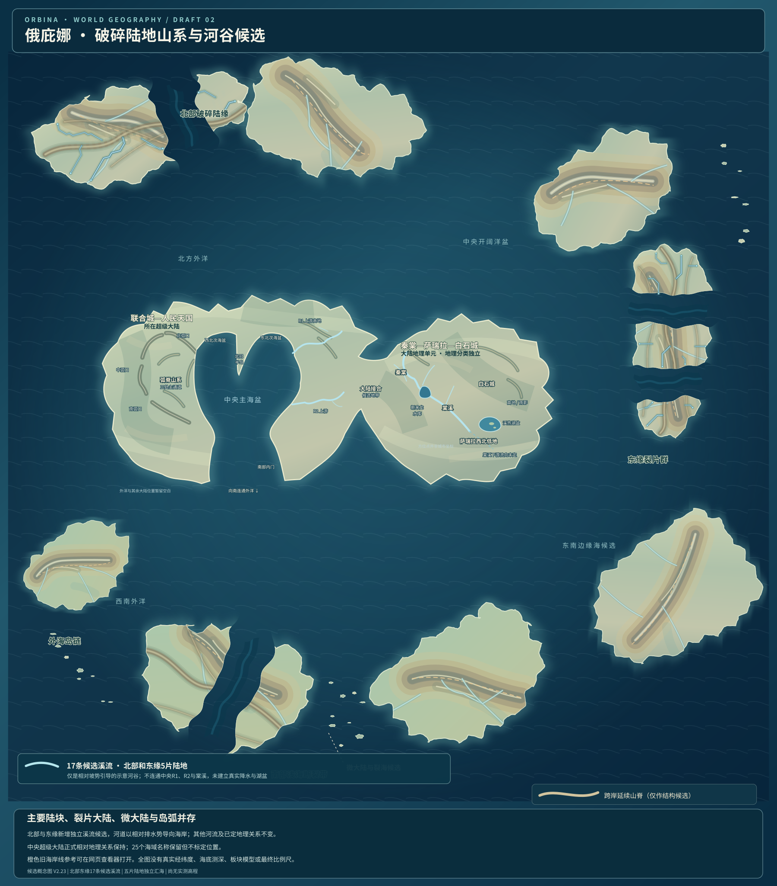
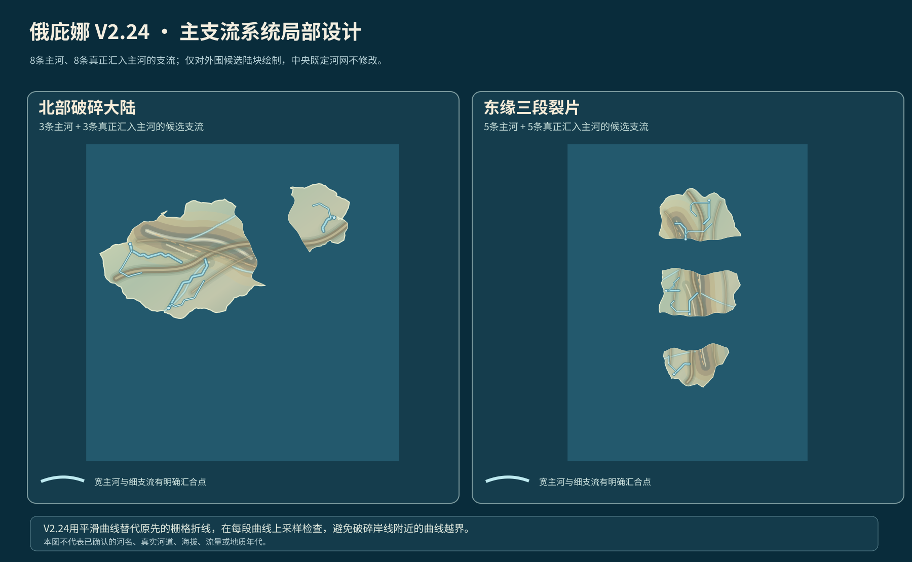

新版主图的独立图层
正在读取矢量地图…
V2.23：17条独立短溪流

溪流均到海岸，但缺乏明确的干支流汇合关系。
V2.24：八组主支流系统
主河和支流线宽不同、曲线化处理，原始格点数据可追溯。

北部、东缘5个破碎陆片的8条主河和8条支流，替换旧版17条互不关联的短溪流显示。所有内容仍为地理候选。
正在读取矢量地图…

溪流均到海岸，但缺乏明确的干支流汇合关系。
主河和支流线宽不同、曲线化处理，原始格点数据可追溯。
